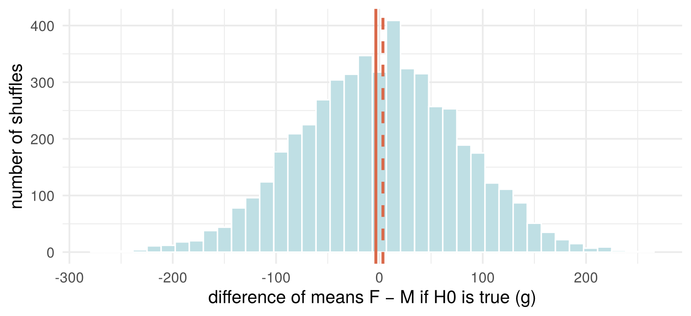

t.test(x, mu = …)), two-sided or one-sided;t.test(x, mu = …)), bilatéral ou unilatéral ;Every test follows the same five steps:
Chaque test suit les mêmes cinq étapes :
Data: octopus_catch.csv (Session 3):
every octopus landed on the reopening day of a temporary closure, in
Tsifota (area reopened) and Andrevo
(open areas). The sex of the fisher
(woman or man) was also recorded.
Données : octopus_catch.csv (séance 3)
: toutes les pieuvres débarquées le jour de réouverture d’une fermeture
temporaire, à Tsifota (zone rouverte) et Andrevo (zones
ouvertes). Le sexe du pêcheur (femme
ou homme) a aussi été noté.
Question: in the reopened area, do octopuses caught by women and by men differ in mean weight? H0: the fisher’s sex has nothing to do with the weight; the labels “F” and “M” could be shuffled without changing anything. H1: the mean weights differ.
If H0 is true, shuffling the labels at random produces differences of the size that chance alone creates. We shuffle 5,000 times and see where the observed difference falls.
Question : dans la zone rouverte, les pieuvres capturées par des femmes et par des hommes diffèrent-elles en poids moyen ? H0 : le sexe du pêcheur n’a rien à voir avec le poids ; on pourrait mélanger les étiquettes « F » et « M » sans rien changer. H1 : les poids moyens diffèrent.
Si H0 est vraie, mélanger les étiquettes au hasard produit des différences de la taille que crée le hasard seul. On mélange 5 000 fois et on regarde où tombe la différence observée.
oc <- read.csv("data/octopus_catch.csv")
re <- oc[oc$area == "reopened", ]
obs <- mean(re$weight_g[re$fisher_sex == "F"]) - mean(re$weight_g[re$fisher_sex == "M"])
obs#> [1] -3.428571set.seed(6)
perm <- replicate(5000, {
shuffled <- sample(re$fisher_sex) # random labels: H0 world
mean(re$weight_g[shuffled == "F"]) - mean(re$weight_g[shuffled == "M"])
})
p_perm <- mean(abs(perm) >= abs(obs)) # two-sided p-value
p_perm#> [1] 0.9672ggplot(data.frame(diff = perm), aes(diff)) +
geom_histogram(bins = 40, fill = "#bfdfe4", colour = "white") +
geom_vline(xintercept = c(-obs, obs), colour = "#d9694a", linewidth = 1, linetype = c(2, 1)) +
labs(x = "difference of means F − M if H0 is true (g)", y = "number of shuffles") + theme_c()
Functions and arguments used here
| Function / argument | What it does | Value it expects |
|---|---|---|
sample(x) |
random permutation of x (Session 1): here, the labels
are redistributed at random among the octopuses |
|
mean(abs(perm) >= abs(obs)) |
share of shuffles giving a difference at least as large (in either direction) as the observed one = the p-value |
Fonctions et arguments utilisés ici
| Fonction / argument | Ce qu’il fait | Valeur attendue |
|---|---|---|
sample(x) |
permutation aléatoire de x (séance 1) : ici, les
étiquettes sont redistribuées au hasard entre les pieuvres |
|
mean(abs(perm) >= abs(obs)) |
part des mélanges donnant une différence au moins aussi grande (dans un sens ou l’autre) que celle observée = la p-value |
The observed difference (solid line) sits well inside the cloud of differences produced by shuffling: such a difference happens in about 97 % of shuffles. No evidence that the fisher’s sex matters (p = 0.97).
Now the main question of the closure: are octopuses heavier in the reopened area than in the open area?
La différence observée (trait plein) se situe bien à l’intérieur du nuage des différences produites par les mélanges : une telle différence arrive dans environ 97 % des mélanges. Pas de preuve que le sexe du pêcheur compte (p = 0.97).
Maintenant la question principale de la fermeture : les pieuvres sont-elles plus lourdes dans la zone rouverte que dans la zone ouverte ?
obs2 <- mean(oc$weight_g[oc$area == "reopened"]) - mean(oc$weight_g[oc$area == "open"])
set.seed(6)
perm2 <- replicate(5000, {
a <- sample(oc$area)
mean(oc$weight_g[a == "reopened"]) - mean(oc$weight_g[a == "open"])
})
obs2#> [1] 349.3041#> [1] 170.527#> [1] 0In 5,000 shuffles, chance never produced a difference as large as 349 g. We report p < 0.001 (never “p = 0”): the data are very unlikely under H0, so we reject it. The difference is real — but the test does not say why (Session 1: this is an observational comparison of two villages).
En 5 000 mélanges, le hasard n’a jamais produit une différence aussi grande que 349 g. On écrit p < 0,001 (jamais « p = 0 ») : les données sont très improbables sous H0, on la rejette donc. La différence est réelle — mais le test ne dit pas pourquoi (séance 1 : c’est une comparaison observationnelle de deux villages).
It is: the probability of data at least as extreme as ours if H0 were true. Small p → the data are surprising under H0.
It is not:
By convention, p < α = 0.05 is called “statistically significant”. The 0.05 threshold is arbitrary: p = 0.049 and p = 0.051 carry the same evidence. Report the exact p-value (e.g. p = 0.034), not only “p < 0.05” or stars.
C’est : la probabilité de données au moins aussi extrêmes que les nôtres si H0 était vraie. p petite → les données sont surprenantes sous H0.
Ce n’est pas :
Par convention, p < α = 0,05 est dite « statistiquement significative ». Le seuil 0,05 est arbitraire : p = 0,049 et p = 0,051 apportent la même preuve. Donnez la p-value exacte (ex. p = 0,034), pas seulement « p < 0,05 » ou des étoiles.
Shuffling needs two groups. With one sample and a reference value μ₀, theory gives the null distribution directly. Example: the fisheries service considers a fishery healthy if the mean octopus landed weighs at least 700 g. In the open area, is the mean weight different from 700 g?
Le mélange demande deux groupes. Avec un seul échantillon et une valeur de référence μ₀, la théorie donne directement la distribution sous H0. Exemple : le service des pêches considère qu’une pêcherie est en bonne santé si la pieuvre moyenne débarquée pèse au moins 700 g. Dans la zone ouverte, le poids moyen diffère-t-il de 700 g ?
wo <- oc$weight_g[oc$area == "open"]
n <- length(wo)
t_stat <- (mean(wo) - 700) / (sd(wo) / sqrt(n))
t_stat#> [1] -2.775127#> [1] 0.006179812#>
#> One Sample t-test
#>
#> data: wo
#> t = -2.7751, df = 159, p-value = 0.00618
#> alternative hypothesis: true mean is not equal to 700
#> 95 percent confidence interval:
#> 581.4663 680.0337
#> sample estimates:
#> mean of x
#> 630.75Functions and arguments used here
| Function / argument | What it does | Value it expects |
|---|---|---|
pt(q, df) |
P(T ≤ q) for a t distribution;
2 * pt(-abs(t), df) = the two tails beyond ±t |
|
t.test(x, mu, alternative, conf.level) |
one-sample t-test of H0: mean of x =
mu |
|
mu |
the reference value μ₀ | a number (default 0) |
alternative |
"two.sided" (default): μ ≠ μ₀; "less": μ
< μ₀; "greater": μ > μ₀ |
Fonctions et arguments utilisés ici
| Fonction / argument | Ce qu’il fait | Valeur attendue |
|---|---|---|
pt(q, df) |
P(T ≤ q) pour une loi de t ;
2 * pt(-abs(t), df) = les deux queues au-delà de ±t |
|
t.test(x, mu, alternative, conf.level) |
test t à un échantillon de H0 : moyenne de x =
mu |
|
mu |
la valeur de référence μ₀ | un nombre (défaut 0) |
alternative |
"two.sided" (défaut) : μ ≠ μ₀ ; "less" : μ
< μ₀ ; "greater" : μ > μ₀ |
How to read the output: t and df; the
p-value; the 95 % CI of the mean (581 to
680 g) — it does not contain 700, which is the same
conclusion as p < 0.05 (a two-sided test at α = 0.05 rejects μ₀
exactly when the 95 % CI excludes μ₀). Report: “In the
open area, octopuses weighed on average 631 g (95 % CI 581–680 g), below
the 700 g reference (one-sample t-test, t = −2.78, df = 159, p =
0.006).”
Lecture de la sortie : t et df ; la
p-value ; l’IC à 95 % de la moyenne (581 à
680 g) — il ne contient pas 700, ce qui est la même
conclusion que p < 0,05 (un test bilatéral au seuil α = 0,05 rejette
μ₀ exactement quand l’IC à 95 % exclut μ₀). Rédaction :
« Dans la zone ouverte, les pieuvres pesaient en moyenne 631 g (IC 95 %
581–680 g), en dessous de la référence de 700 g (test t à un
échantillon, t = −2,78, ddl = 159, p = 0,006). »
A one-sided test (alternative = "less")
looks only in one direction and halves the p-value. It is justified only
if the direction was fixed before seeing the data
and a difference in the other direction would be
treated exactly like “no difference”. In practice, use
two-sided tests unless you have a strong,
pre-registered reason.
Un test unilatéral
(alternative = "less") ne regarde que dans un sens et
divise la p-value par deux. Il n’est justifié que si le sens a été fixé
avant de voir les données et qu’une
différence dans l’autre sens serait traitée exactement comme « pas de
différence ». En pratique, utilisez des tests
bilatéraux sauf raison forte et décidée à l’avance.
Let us check α by simulation: 2,000 samples drawn from a population where H0 is true.
Vérifions α par simulation : 2 000 échantillons tirés d’une population où H0 est vraie.
set.seed(66)
p_null <- replicate(2000, t.test(rnorm(15, mean = 700, sd = 200), mu = 700)$p.value)
mean(p_null < 0.05) # close to 0.05: the false-positive rate#> [1] 0.049That is why running many tests and reporting only the significant ones is misleading: with 20 tests on noise, you expect one “discovery” (multiple testing, Session 11).
C’est pourquoi faire beaucoup de tests et ne rapporter que les significatifs est trompeur : avec 20 tests sur du bruit, on s’attend à une « découverte » (tests multiples, séance 11).
A p-value answers “is there an effect?”; the effect size answers “how big?”, and its CI “how precisely do we know it?”. Always report the effect, in the units of the data:
Whether 50 g more per octopus matters is a fisheries question (price, reproduction), not a statistical one.
Une p-value répond à « y a-t-il un effet ? » ; la taille d’effet répond à « de quelle taille ? », et son IC à « avec quelle précision le connaissons-nous ? ». Donnez toujours l’effet, dans les unités des données :
Savoir si 50 g de plus par pieuvre comptent est une question halieutique (prix, reproduction), pas statistique.
set.seed(60) then 5,000 shuffles of the gear
labels of the open area, as in the session, and give
the two-sided p-value (3 decimals).set.seed(60) puis 5 000
mélanges des étiquettes gear de la zone
ouverte, comme dans la séance, et donnez la p-value bilatérale
(3 décimales).Q6: op <- oc[oc$area == "open", ], then inside
replicate(): s <- sample(op$gear) and the
difference of means of op$weight_g for
s == "spear" and s == "hook". The seed must be
set just before replicate().
Q6 : op <- oc[oc$area == "open", ], puis dans
replicate() : s <- sample(op$gear) et la
différence des moyennes de op$weight_g pour
s == "spear" et s == "hook". La graine doit
être fixée juste avant replicate().
oc <- read.csv("data/octopus_catch.csv")
wr <- oc$weight_g[oc$area == "reopened"]
mean(wr) # 1
t.test(wr, mu = 900) # 2, 3, 4
op <- oc[oc$area == "open", ]
obs <- mean(op$weight_g[op$gear == "spear"]) - mean(op$weight_g[op$gear == "hook"])
obs # 5
set.seed(60)
pg <- replicate(5000, {
s <- sample(op$gear)
mean(op$weight_g[s == "spear"]) - mean(op$weight_g[s == "hook"])
})
mean(abs(pg) >= abs(obs)) # 6
# 7: probability of data this extreme IF H0 were true 8: no evidence (low power?)
# 9: type I error 10: 900 is inside the CI -> not rejected